이 문서의 목차
슬롯 · 설비 · UI 도감 ¶
2026-09-26 코드 및 실행 화면 기준. 설치 가능한 48기종의 외형·점유 슬롯·조작 UI를 모았다. 동력코어는 기관실 고정 설비로 별도 표시한다.
UI는 일시정지한 캡처용 상황에서 열었다. 재고·대원·잠금 상태는 예시이며, 연구를 완료했다는 뜻은 아니다. 기종 외형은 게임 설치창이 사용하는 원본 이미지다.
슬롯 읽는 법 ¶
지붕 포탑은 1칸, 일반 실내 설비는 2칸, 대형 의료·드론·라운지와 동력코어는 4칸을 점유한다. 아래 막대는 한 층 8칸에 대한 점유량을 보여 주는 기획 도식이다.
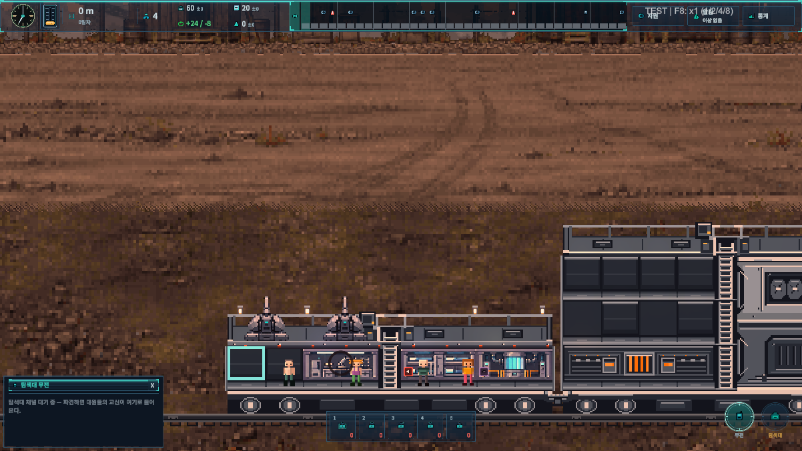
설치 화면 ¶
빈 슬롯을 선택하면 여는 설치창. 카테고리별로 외형과 잠금 상태를 비교한다.
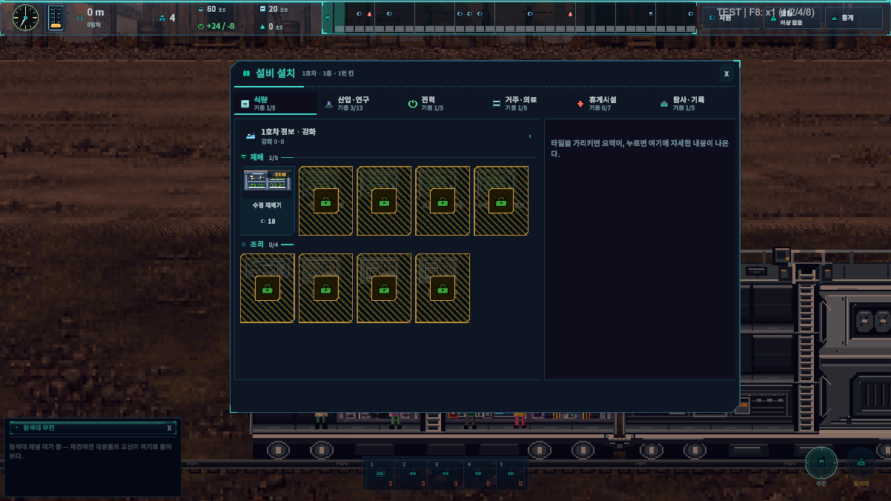
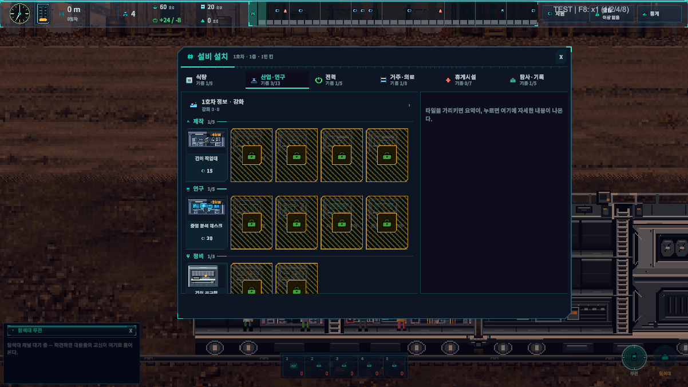
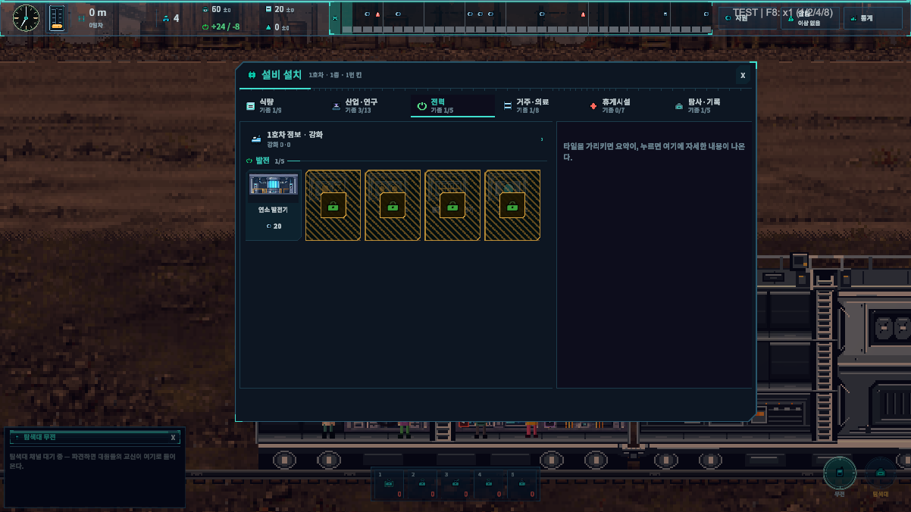
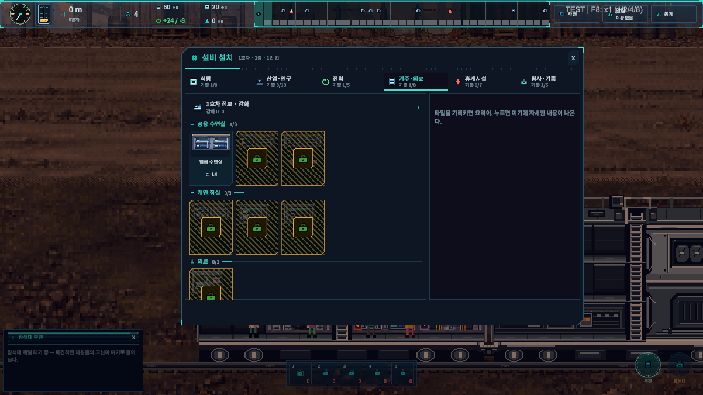
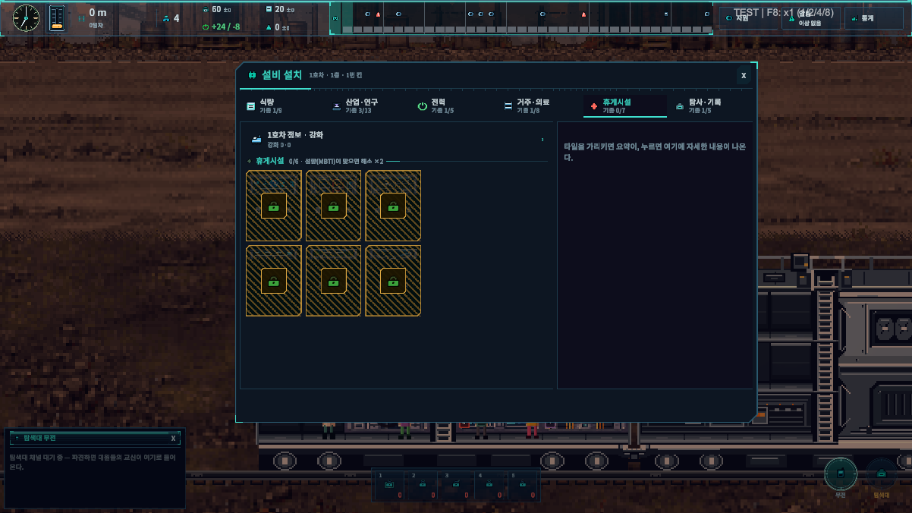
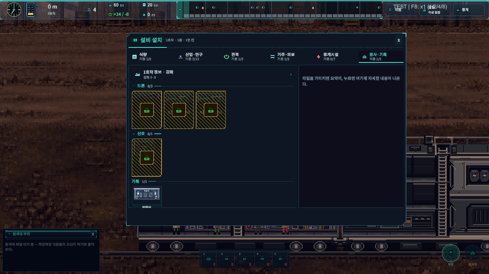
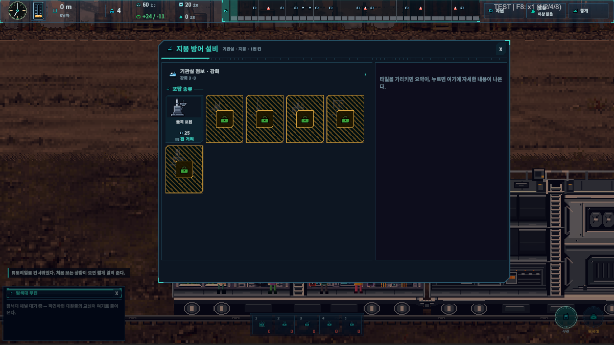
설비별 외형과 조작 UI ¶
식량 ¶
수경 재배기
2칸 · 시작 기종
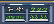
표준 식량 생산
배양액에 뿌리를 담가 기르는 기본 재배기. 대원 한 명이 붙어 20초마다 배급식량 1을 거둔다.
수경 재배기 조작 UI 펼치기
버섯 배양 선반
2칸 · 1단 연구
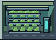
전력 절약형 식량
어두운 선반에서 균사를 키운다. 느리지만 전기를 거의 안 먹고 정전에도 멈추지 않는다. 차단기가 자주 내려가는 초반의 보험.
빛이 필요 없다 — 전력이 모자라도 속도가 줄지 않는다
버섯 배양 선반 조작 UI 펼치기
조류 배양조
2칸 · 2단 연구
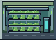
고속 식량
투명 수조에 미세조류를 증식시킨다. 빠르지만 전기를 많이 먹고 냄새가 배어 일하는 사람이 지친다.
비린내 — 작업자 스트레스 +0.04/s
조류 배양조 조작 UI 펼치기
곤충 단백 사육장
2칸 · 3단 연구
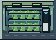
저전력 대량 식량
밀웜 사육 상자. 전기 대비 식량이 압도적이지만 매일 벌레를 만지는 일은 사람을 갉아먹는다. 휴게실과 한 쌍으로 짓는다.
혐오감 — 작업자 스트레스 +0.10/s
곤충 단백 사육장 조작 UI 펼치기
유전자 배양 플랜트
2칸 · 5단 연구
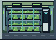
최고 효율 식량
성장 주기를 편집한 작물을 자동 순환로에서 키운다. 자리 하나로 재배기 두 대 반을 대신한다.
유전자 배양 플랜트 조작 UI 펼치기
합성 조리대
2칸 · 2단 연구
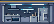
식량 증폭
배급식량 1을 조리해 4인분으로 불린다. 재배기 셋을 대신하는 식량 설비의 두 번째 축.
합성 조리대 조작 UI 펼치기
압력 조리기
2칸 · 3단 연구
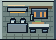
빠른 증폭
고압 솥으로 조리 시간을 줄인다. 한 번에 불리는 양은 같지만 훨씬 자주 돌린다.
압력 조리기 조작 UI 펼치기
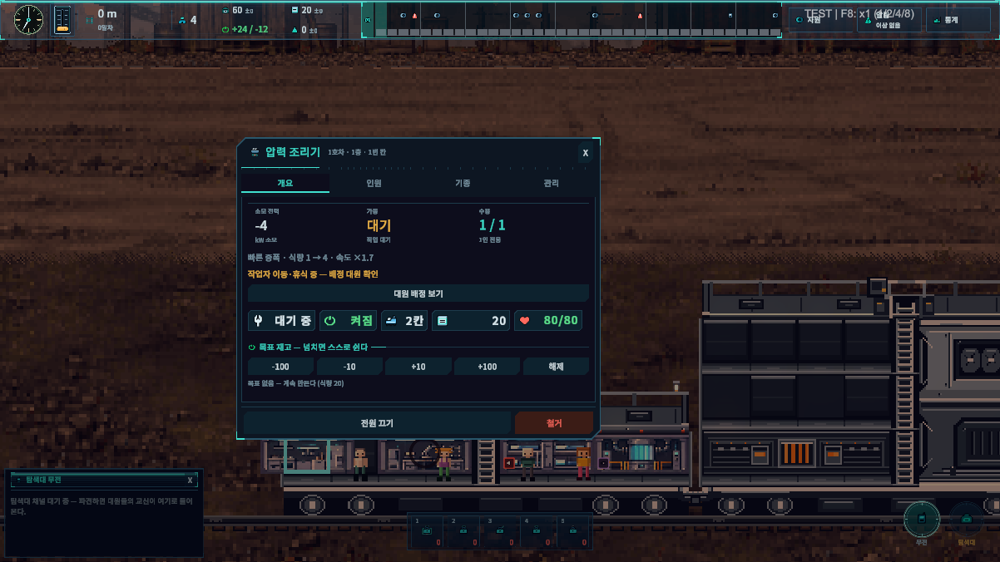
대량 급식 솥
2칸 · 4단 연구
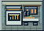
느린 대량 증폭
커다란 솥 하나로 7인분을 끓인다. 느리고 힘들지만 식량 한 톨당 산출이 크다 — 재료가 귀할 때의 답.
고된 노동 — 작업자 스트레스 +0.05/s
대량 급식 솥 조작 UI 펼치기
분자 조리 셀
2칸 · 5단 연구
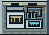
최고 증폭
영양 분자를 재조합해 1을 9로 만든다.
분자 조리 셀 조작 UI 펼치기
제작 · 연구 · 정비 ¶
중앙 분석 데스크
2칸 · 시작 기종
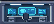
기본 연구
회수한 자료를 분석해 연구 포인트를 만든다(초당 2).
중앙 분석 데스크 조작 UI 펼치기
기록 보관 단말
2칸 · 1단 연구
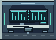
조용한 연구
느리지만 전기를 적게 먹고, 여기서 일하는 대원은 오히려 안정된다.
정리 작업은 마음을 가라앉힌다 — 스트레스 −0.04/s
기록 보관 단말 조작 UI 펼치기
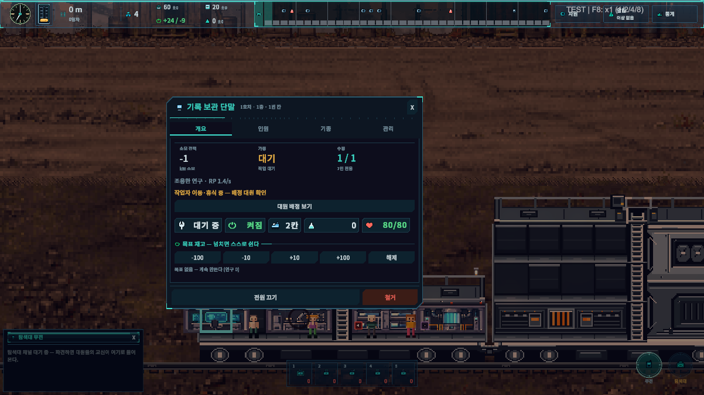
병렬 연산 랙
2칸 · 2단 연구
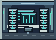
고속 연구
연산기를 여러 대 묶어 분석을 나눈다. 전기를 두 배 먹는다.
병렬 연산 랙 조작 UI 펼치기
시뮬레이션 코어
2칸 · 4단 연구
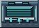
대규모 연구
가설을 통째로 시뮬레이션한다. 빠르지만 연구원이 잠을 설친다.
끝없는 사고 실험 — 작업자 스트레스 +0.05/s
시뮬레이션 코어 조작 UI 펼치기
관측 데이터 링크
2칸 · 5단 연구
최고 연구
옛 위성망의 잔여 신호에 접속해 자료를 끌어온다.
관측 데이터 링크 조작 UI 펼치기
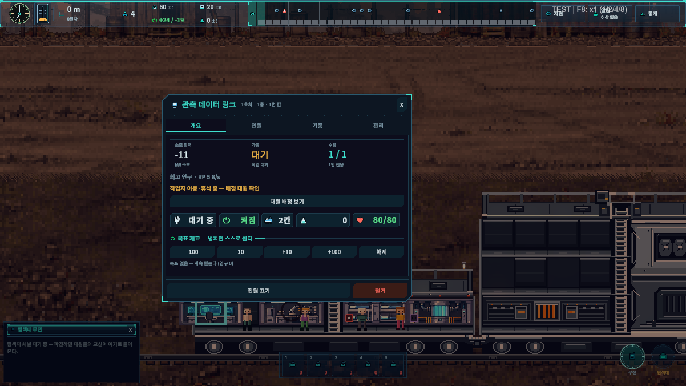
지붕 포탑 마운트
1칸 · 시작 기종
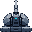
지붕 포탑 거치대. 대원 상주 시 사격.
지붕 포탑 거치대. 대원 상주 시 사격.
지붕 포탑 마운트 조작 UI 펼치기
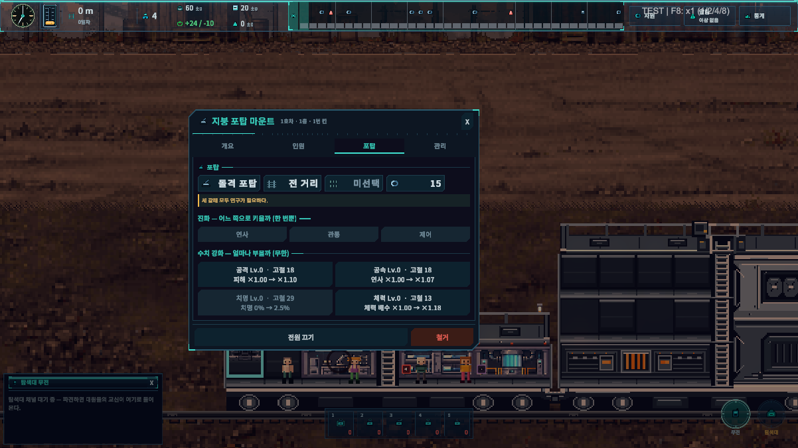
간이 작업대
2칸 · 시작 기종
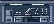
기본 제작 · 분해
분해·정제·소모품을 만드는 기본 작업대. 1등급 레시피까지.
간이 작업대 조작 UI 펼치기
수동 공구 벤치
2칸 · 1단 연구
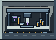
무전력 제작
바이스와 줄칼뿐인 벤치. 전력망에 아무 부담도 주지 않는다.
전기 없이 손으로 — 느리고 힘들다(스트레스 +0.03/s)
수동 공구 벤치 조작 UI 펼치기
정밀 가공대
2칸 · 2단 연구
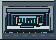
2등급 레시피
절삭 공구를 갖춘 가공대. 합금 분해 같은 2등급 레시피가 열린다.
정밀 가공대 조작 UI 펼치기
합성 프린터
2칸 · 3단 연구
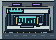
3등급 레시피
적층 합성으로 부품을 찍어 낸다. 모듈 분해까지 가능하다.
합성 프린터 조작 UI 펼치기
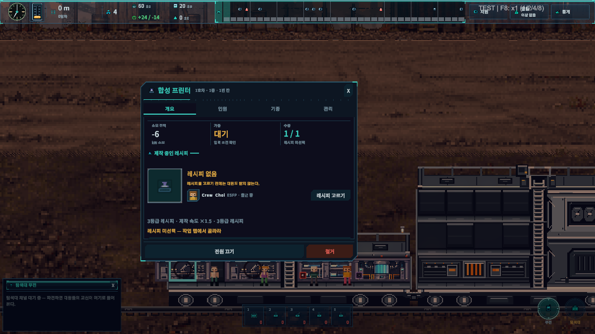
자동 공작 셀
2칸 · 4단 연구
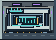
4등급 · 고속 제작
로봇 팔이 공정을 돈다. 코어 분해를 포함한 모든 레시피.
사람은 감독만 한다 — 작업자 스트레스 −0.02/s
자동 공작 셀 조작 UI 펼치기
간이 공구함
2칸 · 시작 기종
기본 정비
벽에 건 공구 몇 자루. 대원이 맨손으로 고치는 것보다 낫다.
전력이 필요 없다
간이 공구함 조작 UI 펼치기
용접 작업대
2칸 · 2단 연구
빠른 정비
용접기와 판재 절단기. 대원의 수리 속도가 1.8배가 된다.
용접 작업대 조작 UI 펼치기
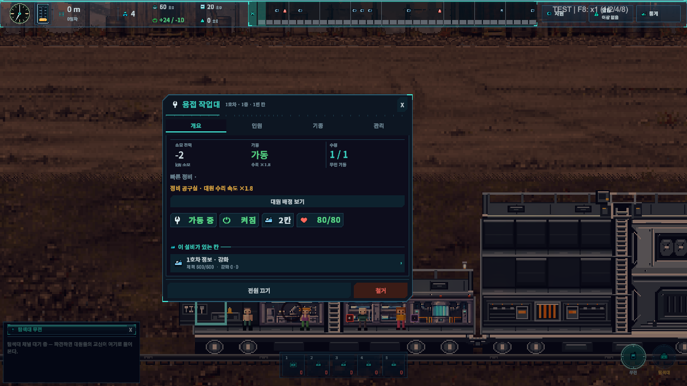
나노 수선대
2칸 · 4단 연구
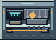
최고 정비
수선 나노를 충전해 들고 나간다. 대원의 수리 속도가 2.8배가 된다.
나노 수선대 조작 UI 펼치기
동력 ¶
연소 발전기
2칸 · 시작 기종
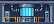
기본 발전
응축연료를 태워 20kW 를 낸다. 연료 1당 80kW·s.
연소 발전기 조작 UI 펼치기
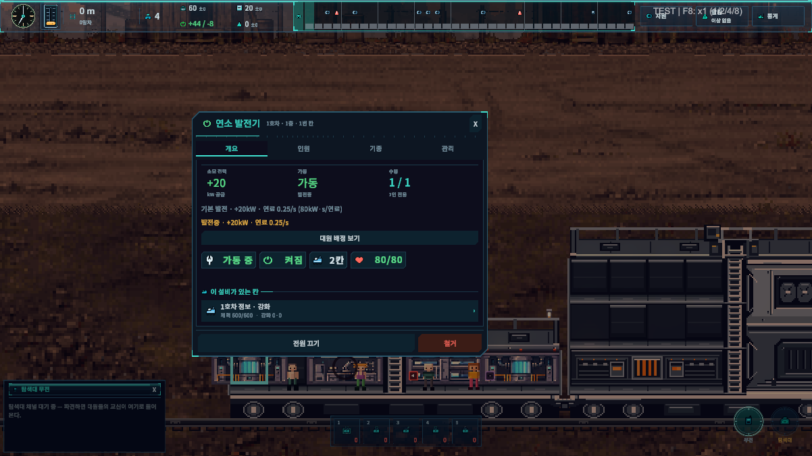
저속 터빈
2칸 · 1단 연구
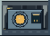
연료 절약형
천천히 돌려 연료를 아낀다. 출력은 절반이지만 연료당 전력은 기본형보다 좋다(110kW·s).
저속 터빈 조작 UI 펼치기
고압 연소로
2칸 · 2단 연구
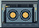
고출력 · 연비 나쁨
한 자리에서 36kW 를 뽑는다. 자리가 모자랄 때의 답이지만 연료 탱크가 빠르게 빈다.
연료당 전력이 가장 나쁘다(65kW·s)
고압 연소로 조작 UI 펼치기
열전 회수 발전기
2칸 · 3단 연구
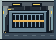
고효율 발전
배기열까지 전기로 바꾼다. 연료 1당 123kW·s.
열전 회수 발전기 조작 UI 펼치기
코어 반응로
2칸 · 5단 연구
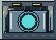
최고 출력
코어를 촉매로 쓰는 반응로. 62kW · 연료 1당 138kW·s.
코어 반응로 조작 UI 펼치기
수면 · 의료 ¶
합금 수면실
2칸 · 시작 기종
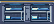
기본 잠자리
4명이 함께 자는 이층 침상. 전기가 필요 없다.
합금 수면실 조작 UI 펼치기
온열 수면실
2칸 · 2단 연구
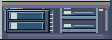
빠른 회복
바닥 난방과 차광막. 같은 네 자리를 30% 빨리 되돌린다.
온열 수면실 조작 UI 펼치기
재생 수면 구획
2칸 · 4단 연구
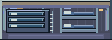
최고 회복
수면 단계를 유도하는 공조. 네 명을 가장 짧게 재운다.
재생 수면 구획 조작 UI 펼치기
캡슐 수면실
2칸 · 1단 연구
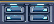
개인 수면 구획
1인용 캡슐 둘. 다인실 압박이 없고 I형은 두 배로 회복한다.
캡슐 수면실 조작 UI 펼치기
방음 캡슐
2칸 · 3단 연구
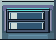
조용한 개인실
흡음재로 감싼 캡슐 둘. 소음이 닿지 않아 잠이 깊다.
방음 캡슐 조작 UI 펼치기
동면 캡슐
2칸 · 5단 연구
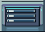
초고속 회복
대사를 늦춰 짧게 깊이 재운다.
동면 캡슐 조작 UI 펼치기
재생 의료실
4칸 · 4단 연구
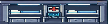
중후반 치료 · 소생
세포 재생 장비와 침상 넷. 치료 8/s · 재장전 60초.
재생 의료실 조작 UI 펼치기
간이 의무소
2칸 · 1단 연구
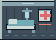
초반 치료 · 소생
간이 침상 하나와 응급 키트. 한 명만 눕지만 전사 판정을 1회 무효화한다(부품 2 · 재장전 150초).
간이 의무소 조작 UI 펼치기
휴식 ¶
네온 바
4칸 · 4단 연구
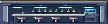
E·F 휴게 홀
네 명이 모이는 바. E·F 성향이 두 배로 풀린다.
네온 바 조작 UI 펼치기
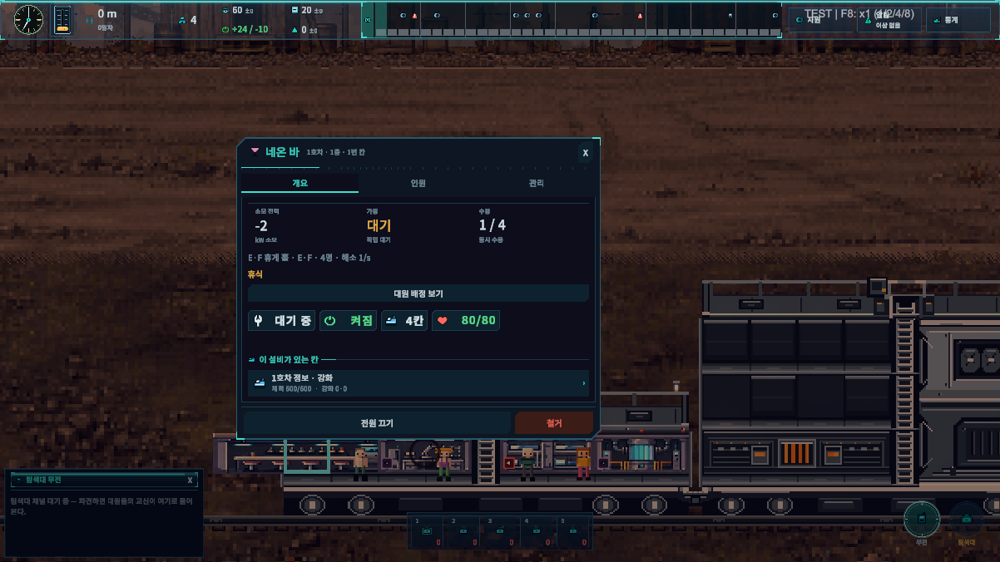
전술 시뮬 부스
2칸 · 2단 연구
T·J 휴게
모의 교전 게임. T·J 성향이 두 배로 풀린다.
전술 시뮬 부스 조작 UI 펼치기
온실 라운지
4칸 · 4단 연구
S·P 휴게 홀
초록 사이에서 쉰다. S·P 성향이 두 배로 풀린다.
온실 라운지 조작 UI 펼치기
홀로 오락 부스
2칸 · 2단 연구
E·N 휴게
홀로그램 게임기. E·N 성향이 두 배로 풀린다.
홀로 오락 부스 조작 UI 펼치기
모형 조립 부스
2칸 · 2단 연구
I·S 휴게
작은 부품을 맞추는 조용한 취미. I·S 성향이 두 배로 풀린다.
모형 조립 부스 조작 UI 펼치기
관측 라운지
4칸 · 4단 연구
I·N 휴게 홀
칸막이 개인석에서 창밖을 본다. I형 붐빔이 없다.
관측 라운지 조작 UI 펼치기
화분 선반
2칸 · 3단 연구
칸 스트레스 완화
물을 적게 먹는 관엽을 벽면에 건다. 아무도 붙어 있지 않아도 그 칸의 공기가 달라진다.
같은 칸 대원의 스트레스 상승 −8%
화분 선반 조작 UI 펼치기
탐색 ¶
위령비
2칸 · 시작 기종
떠난 대원의 명부를 보관한다. 여기서만 위령비 명부를 열람할 수 있다.
떠난 대원의 명부를 보관한다. 여기서만 위령비 명부를 열람할 수 있다.
위령비 조작 UI 펼치기
신호 해독기
2칸 · 시작 기종
다음 구역에 어떤 적 유형이 오는지 읽는다. 무인 가동.
다음 구역에 어떤 적 유형이 오는지 읽는다. 무인 가동.
신호 해독기 조작 UI 펼치기
드론 관제탑
4칸 · 3단 연구
확정 탐색
사람을 내리지 않고 드론으로 회수한다. 180초에 한 번, 탐색대의 45%.
드론 관제탑 조작 UI 펼치기
경량 정찰 드론대
4칸 · 4단 연구
짧고 자주
작은 드론을 자주 보낸다. 한 번에 적게, 대신 두 배 가깝게 자주.
경량 정찰 드론대 조작 UI 펼치기
화물 드론 격납고
4칸 · 5단 연구
길고 크게
대형 화물 드론. 4분에 한 번, 탐색대에 맞먹는 양을 싣고 온다.
화물 드론 격납고 조작 UI 펼치기
기관실 고정 설비 ¶
동력코어는 설치 목록에서 구매하는 설비가 아니다. 기관실에 고정되며 추진 단계와 상태를 조작한다. 점유 4칸.